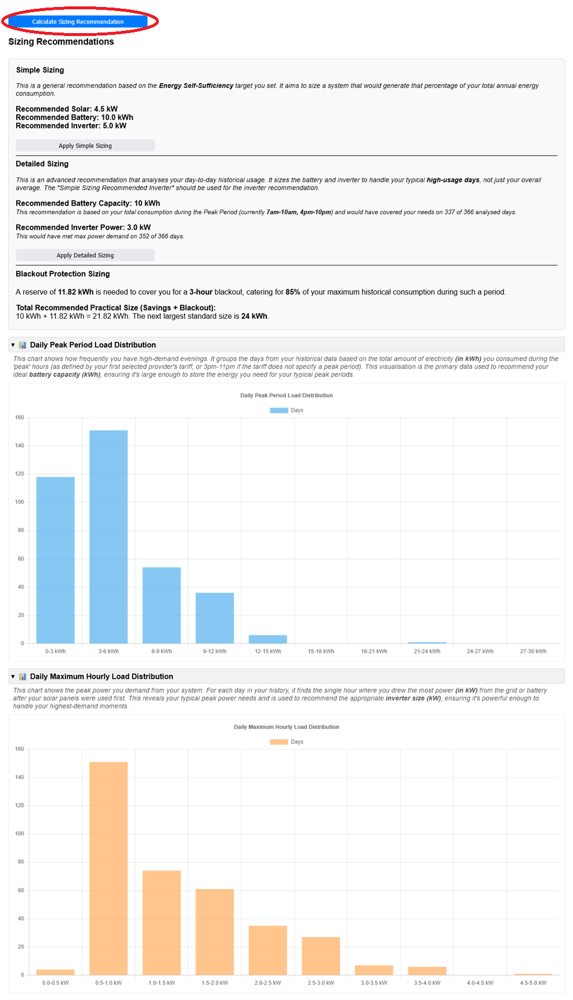
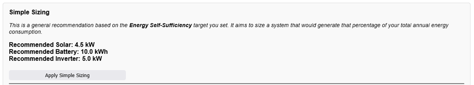
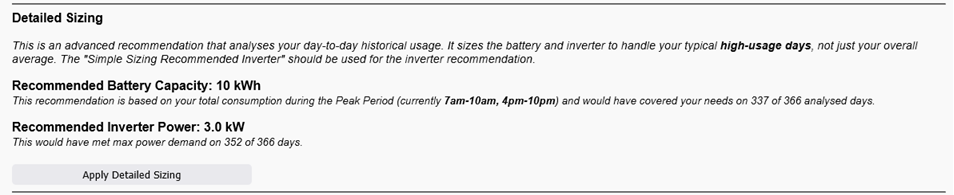
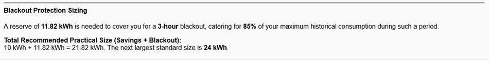

This feature, located in Section 3, helps you estimate what size solar panels, battery, and inverter might be appropriate for your needs before you run the full financial analysis. It provides two different types of recommendations.
Step 1: How to Run the Calculation
Before using this tool, you must first complete Section 1: Data Input (either CSV/NEM12 or Manual Mode).
Once your data is loaded, go to Section 3: New System and click the Calculate Sizing Recommendation button.

The results will appear in a new sub-section just below the button.
Step 2: Understanding "Simple Sizing" (All Modes)
This is a basic, "top-down" estimate based on your total annual energy consumption.

Recommended Solar (kW): This size is calculated based on the "Energy Self-Sufficiency (%)" target you set in Section 3. For example, a 90% target aims to size a solar system large enough to generate 90% of your total annual electricity usage.
Recommended Battery (kWh): This is a rough heuristic (general guess) based on your average daily consumption patterns (Peak vs. Off-Peak).
Recommended Inverter (kW): This is a simple estimate based on the recommended solar size.
"Apply Simple Sizing" Button: Clicking this button will copy these three recommended values into the "Additional Solar Panel Size", "Additional Battery Size", and "Additional Battery Inverter" fields for you.
This powerful recommendation only appears if you have uploaded your interval data (CSV or NEM12). It performs a "bottom-up" analysis of your actual daily habits.

Recommended Battery Capacity (kWh): This is based on your Daily Peak Period Load. The analyser finds your typical "high-usage" day (e.g., the 90th percentile) and recommends a battery large enough to cover the energy you used during the expensive peak tariff hours on that day.
Recommended Inverter Power (kW): This is based on your Daily Maximum Hourly Load. The analyser finds the single hour of highest power (kW) you pulled from the grid (after solar) on your "high-usage" days. This recommends an inverter powerful enough to handle your peak demand spikes without tripping.
The Histograms (Charts): These charts visualize the data:
Peak Period Load Distribution: Shows how many days you have "low" vs. "high" peak energy needs. A long tail to the right suggests a larger battery will be more beneficial.
Maximum Hourly Load Distribution: Shows how often you have high power spikes. A few tall bars on the far right suggest a more powerful (higher kW) inverter is necessary.
"Apply Detailed Sizing" Button: Clicking this copies the Battery and Inverter values. (Solar size is left for you to decide, as it's more dependent on roof space and budget).
This is an optional add-on to the "Detailed Sizing" recommendation, enabled by a checkbox in Section 3.

This calculation finds your worst-case energy usage (highest consumption period) in your historical data that matches the "Blackout Duration" you set.
It then calculates the additional battery capacity (a "reserve") needed to cover the "Usage Coverage" percentage you specified for that worst-case scenario.
The final recommendation shows you: (Detailed Daily Battery Size) + (Blackout Reserve Size) = Total Recommended Practical Size
Step 5: What To Do Next
The sizing recommendations are a guide, not a final answer. A good workflow is:
Run the Sizing calculation.
Click "Apply Simple Sizing" or "Apply Detailed Sizing" to populate the inputs in Section 3.
Manually adjust the "Additional Solar Panel Size" and costs based on quotes you have received.
Configure the rest of the analyser (Sections 4, 5, 6).
Run the main Run ROI Analysis button to see the full financial breakdown for that recommended system.